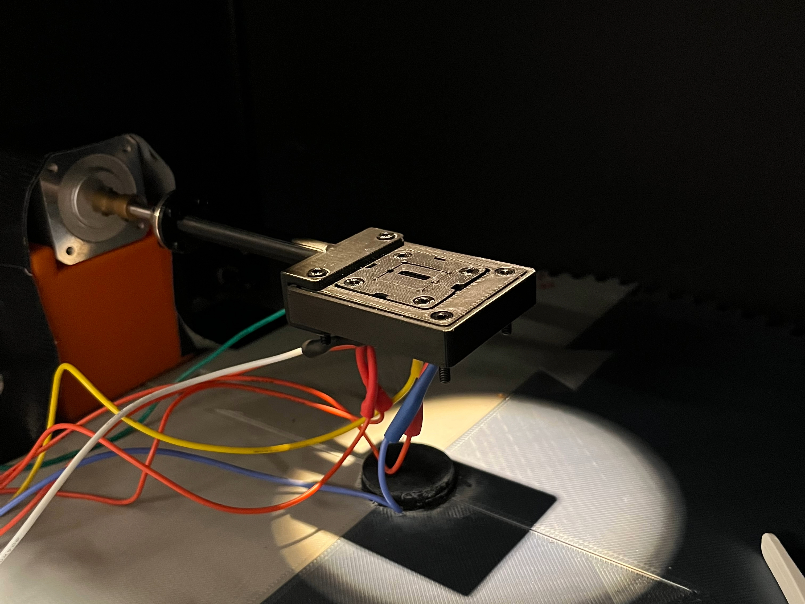
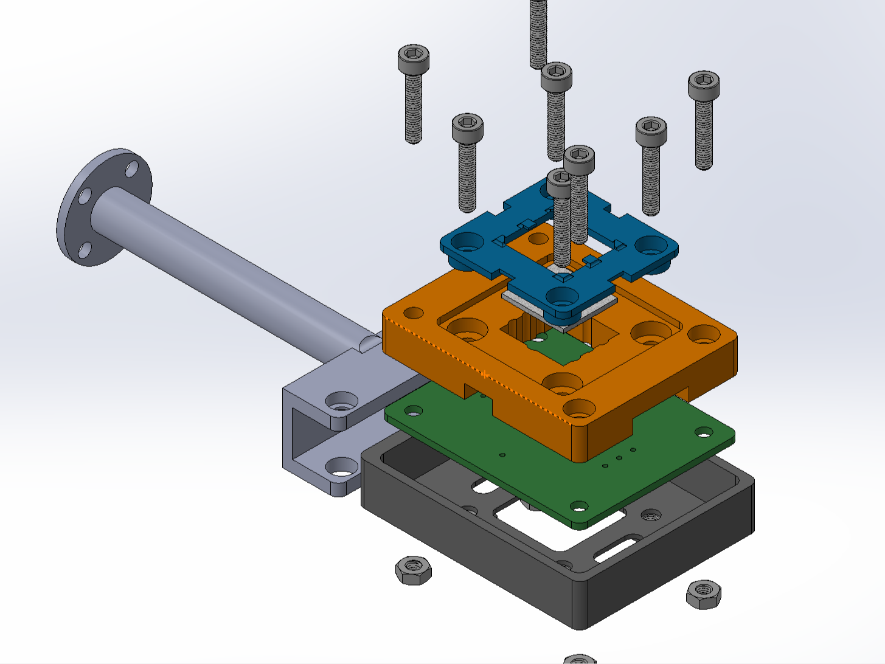
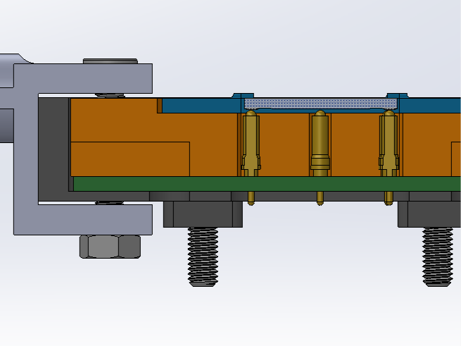
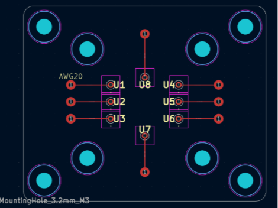
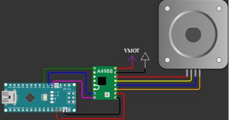
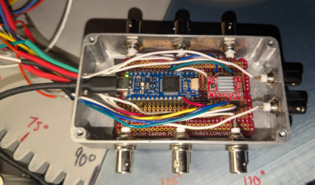

Solar Cell Testing Fixture
Project SPIN, Energy Harvesting Materials course
A motorized 2-axis platform that measures organic solar cell performance across tilt angles. It integrates a stepper motor, an Arduino, a motor driver, and a custom PCB with spring-loaded copper contacts, synchronized with a source measure unit to capture I-V curves at each position.
I designed the mechanical fixture that connects the motor to the solar cell, and handled electronic assembly and hardware debugging.
- Role Fixture design, electronic assembly, hardware debugging
- Team 4 students
- Course Energy Harvesting Materials
- Tools Arduino, motor driver, Ossila Source Measure Unit, DMM, CAD, 3D printing




Highlights
- Designed and 3D-printed a fixture that rotates the solar cell through a full 180° of pitch for angular characterization
- Assembled and debugged the custom PCB with a copper contact array for reliable electrical connection to the cell
- Verified the system end to end: cable continuity plus voltage checks across the power supply, motor driver, motor, and microcontroller
- Collected and analyzed I-V curves with an Ossila Source Measure Unit, showing a bell-curve relationship between pitch angle and power conversion efficiency
Build Process

How it works
The fixture sets the cell's polar and azimuthal angles with 3D-printed parts and a spring-loaded probe PCB. At each position, the source measure unit sweeps an I-V curve, giving repeatable efficiency measurements under realistic lighting.

Iteration and debugging
The first prints were too tight because of print speed settings. I resized the base and adjusted print orientation and nozzle size to get accurate fits.
The substrate holder was the most sensitive part. I refined its features to a tenth of a millimeter and reprinted until the cell sat flush. Every fastener is fully recessed so nothing casts a shadow on the cell during rotation, which matters for measurement accuracy.
On the electronics side, I checked continuity on every cable and verified voltages across the motor, power supply, and driver before full operation. The result was a working, documented piece of lab equipment, delivered within the course timeline.
Skills Used
Hardware Debugging
Continuity checks on hand-soldered connections and DMM voltage verification at the microcontroller, driver, and motor.
Mechanical Design
A rotating, pitchable platform of four main parts that couples the motor to the cell under test.
Rapid Prototyping
Iterative 3D printing, tuning print parameters and part orientation for tight-tolerance fits.